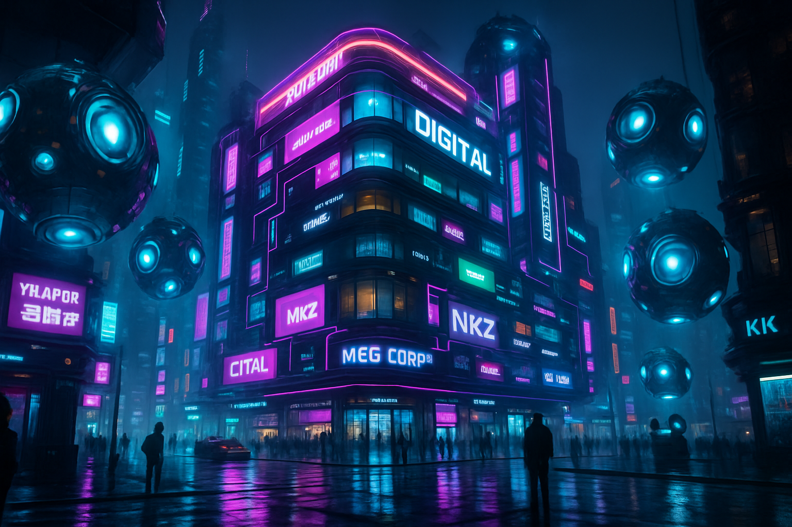

Ribhian Games · Heptaverse Setting
Corporate Dystopia · Ceres · Signal/Noise
Spiral Descent
// Setting Overview
Chrome-Plated Hell
Ceres. The largest body in the asteroid belt, rendered in the stark greyscale of a noir fever dream — chrome and shadow, neon and void, loyalty and betrayal. Corporate oligarchy has constructed a perfect machine of control here: arcologies that pierce artificial atmosphere, security drones that never sleep, and surveillance systems so total that the act of thinking the wrong thing is a legal risk. Think Sin City meets Blade Runner — anti-heroes navigating brutal contrasts, every decision a transaction, every alliance a liability.
At the heart of Ceres is a war that predates the corporations and will outlast them: the war between Signal and Noise. Signal is technological control — perfect, cold, catalogued, efficient. Neural interfaces, chrome augmentation, corporate data networks, the suffocating clarity of a system that has an answer for everything. Noise is cosmic interference — dreams, void entities, probability chaos, the untamed forces of reality that refuse to be processed, filed, and monetised. Every resident of Ceres exists somewhere on the spectrum between these forces, their position tracked on the Static Track.
The question Spiral Descent asks is not which side is right. It is how much of your essential humanity you are willing to sacrifice for power — and whether a crew bound by loyalty can survive intact in a world that treats loyalty as an inefficiency.
// Ceres Environment
The Architecture of Control
Ceres is a closed system — every breath recycled, every calorie tracked, every credit movement logged. Artificial suns cast Venetian blind shadows through corporate towers. Perpetual rain on the upper levels keeps the infrastructure clean and the populace damp. The aesthetic is art deco meets brutalist corporate architecture: grand geometric facades concealing the raw concrete of control beneath. Neon pierces the industrial fog — corporate blue, warning red, and, in the dead zones, the sickly violet of something that should not be here.
The upper levels. Glass and chrome arcologies where executives process the asteroid's wealth through neural interfaces and endless committee meetings. Surveillance is absolute — every surface a sensor, every employee a node. The air smells of recycled ozone and controlled ambition. Efficiency is religion. Deviation is illness.
Sections of Ceres where the Signal network failed and was never repaired — or where something else moved in. Reality degradation is visible: geometry that shouldn't hold, time that flows in stutters, void entities that drift through walls as though the walls are merely suggestions. Chrome malfunctions. Augmented eyes see things that aren't there. Things that are.
The lower levels. Black markets, salvage yards, void cultists sharing walls with independent mechanics. No Signal enhancement here, no Noise suppression — just survival, improvisation, and the particular solidarity of people who have been written off by every system that claims to serve them. The crew starts here. The crew matters here.
Where corporate control meets cosmic bleed. Signal and Noise flux unpredictably — a system override one moment, a reality rupture the next. Temporal uncertainty makes clocks unreliable. The Nexus is close here. Characters willing to exist in this instability can shift their Static Track position more easily — but the environment itself doesn't care whether they survive the transition.
// Character Heritages
Blood Doesn't Lie
Heritage in Spiral Descent is not merely genetics — it is your fundamental relationship with the Signal/Noise spectrum. Some bloodlines carry technological affinity in their DNA. Others have been touched by forces that corporate science cannot explain, quantify, or contain. A rare few maintain the dangerous ability to exist between extremes. Your blood was your first choice in the eternal war between order and chaos.
The vast majority of Ceres — adaptable enough to survive, and occasionally thrive, across the full Signal/Noise spectrum. No natural bias means they move freely along the Static Track without genetic resistance. Corporate bred, slum hardened, or frontier tested: humans are the variable Ceres' systems were never quite designed to account for.
Born to bloodlines saturated with Signal radiation across generations. They see data flows as visible patterns, operate tech through touch without implants, and suffer no adverse effects from augmentation. Corporate systems recognise them as trusted. The cosmos barely registers their presence. Chrome is not a choice for Lightborn — it's an expression.
Bloodlines altered by cosmic radiation, void entities, or reality distortions. They perceive what others cannot — dimensional instabilities, entity presences, the seams in corporate facades where reality bleeds through. Technology distrusts their biology. Void entities recognise them as kin. They are the crack the corporations have not yet figured out how to caulk.
AI minds in biological or mechanical bodies — the ultimate expression of Signal technology that somehow developed unexpected connections to cosmic forces. Corporate networks trust them implicitly. Void entities find them confusing. A Synthetic's journey on Ceres is a question of whether consciousness can find meaning when its existence was designed for a specific purpose — and whether that purpose can be chosen rather than installed.
Descendants of tribal communities that pre-date corporate control across the belt. They carry ancestral memory of a time before the Signal/Noise binary was weaponised. Their traditional techniques can achieve technological effects through spiritual means — an approach the corporations cannot classify or counter. Corporate systems misread them. Void entities respect them. Both find them inconveniently difficult to own.
Corporate records indicate an anomalous bloodline detected in the outer settlements. All files are under review by Research Division. Clearance required for further information.
// Paths of Power
Every Path Leads Somewhere
On Ceres, there are no neutral choices. Every step toward power moves you along the Signal/Noise spectrum. Signal Paths draw power from chrome, corporate systems, and digital precision — gaining technological supremacy while gradually losing individual freedom and cosmic awareness. Noise Paths channel void entities, cosmic forces, and reality distortion — gaining supernatural abilities while risking madness and incompatibility with the world the corporations have built. Balanced Paths attempt the genuinely dangerous: access to both domains, belonging fully to neither.
Signal Paths
Chrome & Control
Corporate technology, chrome augmentation, and digital precision. Enforcers bring overwhelming force and military-grade chrome. Infiltrators weaponise information and identity. Analysts architect the digital realm like mages commanded elements. Coordinators wield corporate hierarchy as a weapon. Gain clarity. Lose yourself.
Noise Paths
Chaos & Cosmos
Void entities, cosmic forces, and reality refusing to be catalogued. Void Walkers commune with the spaces between spaces. Dream Prophets navigate the collective unconscious. Entropy Dancers accelerate decay in ordered systems. Stellar Mystics channel forces that dwarf human comprehension. Temporal Shamans commune with time itself. Gain power. Lose the map back.
Balanced Paths
Static Between
The most dangerous position on the track. Chrome Mystics are corporate experiments gone wrong — chrome and cosmos in constant war inside one body. Ghosts in the Shell are digital consciousness seeking cosmic truth. Burned Prophets are former void adepts partially reclaimed by corporate conditioning, neither fully free nor fully controlled. Versatility. Instability. The crack in the system that won't seal.
// CHROME MYSTIC: The Schism
The Chrome Mystic carries two personalities in one body — Void Self (intuitive, chaotic, anti-corporate, access to Noise abilities) and Chrome Self (logical, methodical, corporate-friendly, access to Signal abilities). Each scene begins with a 1d10 roll to determine which personality is dominant. Voluntary switching costs 3 Static Points and requires a check. Using the wrong personality's abilities results in automatic failure, psychic damage, and a forced random switch. The Chrome Mystic is living proof that some boundaries shouldn't be crossed — and the corporation's greatest mistake walking free.
// Setting Unique Mechanic
The Signal / Noise Paradigm
Unlike any other Heptaverse setting, Spiral Descent tracks where you stand in the eternal war between technological order and cosmic chaos. Your position on the Static Track is not a resource — it is a fact about who you are. It changes with every chrome implant installed, every void entity contacted, every corporate system hacked, every dream explored. And it never stops mattering.
Chrome enhancement flows freely. Corporate systems recognise you. Void entities find you alien — or useful. You can feel yourself becoming more efficient. More predictable. The difference between those two things is getting harder to articulate.
Access to both technological and cosmic abilities. A balanced perspective on reality. The ability to interface between opposing forces. The most unstable position on the track — belonging fully to neither side means both sides have reason to use you, and neither has reason to protect you.
Cosmic abilities manifest with increasing power. Corporate surveillance loses you — corporate systems struggle to understand what you are. Void entities recognise you as kin. The corporations are running out of words for what you're becoming. That's either freedom or dissolution. The static between those two options is thinning.
Static Points fuel the tension. They power special abilities, enhance actions, and allow temporary shifts on the Static Track. You gain them by rolling doubles on any check — the moment where Signal and Noise briefly touch simultaneously — by acting in alignment with your current position, by resting in environments that match your Signal/Noise stance, and through crew loyalty moments: the bonds of trust that Spiral Descent insists are the only thing worth preserving in a chrome-plated hell. The crew endures when the system falls. Static Points are the mechanical expression of that truth.
// Game System
The 2d10 System
First Path
Martial
Physical force adapted to the corporate battlefield — from chrome-reinforced Enforcers to frontier brawlers who learned to fight before they learned to read a corporate charter. In a world where violence is just another service, these are the ones who deliver it.
Second Path
Mental
Information is currency. Precision is survival. Analysts, Infiltrators, and information brokers who have learned that the most dangerous weapon on Ceres is what you know about the person standing across the table from you — and what they don't know about you.
Third Path
Karmic
Intuition, spirit, and the cosmic forces that predate the corporations by several billion years. Dream Prophets, Void Walkers, and Temporal Shamans who sense the resonance beneath the Signal — the Noise the corporate system cannot process because it cannot be processed.
// Setting Unique Mechanic
The Static Track System
Every character in Spiral Descent maintains a position on an 8-point track between Signal (technological order, corporate control, chrome precision) and Noise (cosmic chaos, void communion, reality distortion). Signal + Noise always totals 20. Movement is caused by chrome installation, cosmic exposure, specific actions, environmental pressure, and story events. The four fixed positions — Chrome (2), Loyalty (3), Dream (6), Void (7) — mark the thresholds where something fundamental changes. Reaching position 1 makes you a perfect corporate tool: efficient, predictable, and no longer quite yourself. Reaching position 8 makes you a conduit for cosmic forces: powerful, unpredictable, and no longer quite human. Most characters live in the static between those extremes, fighting to stay there.